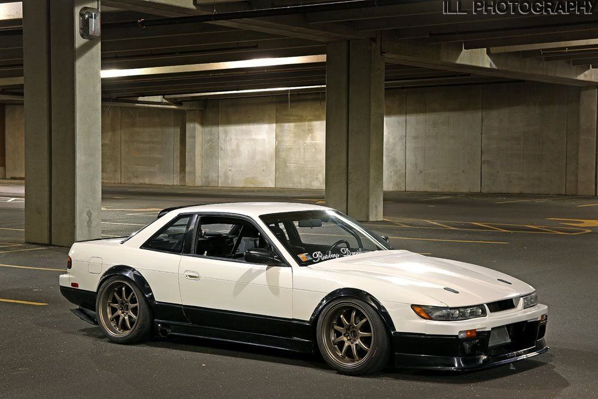
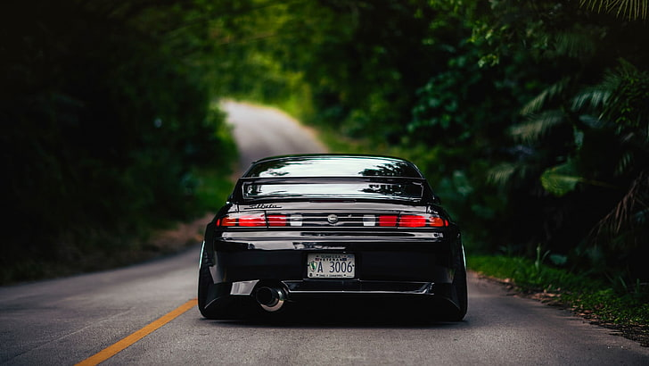
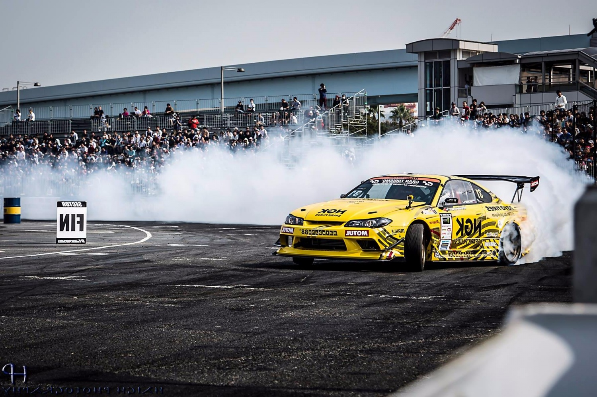
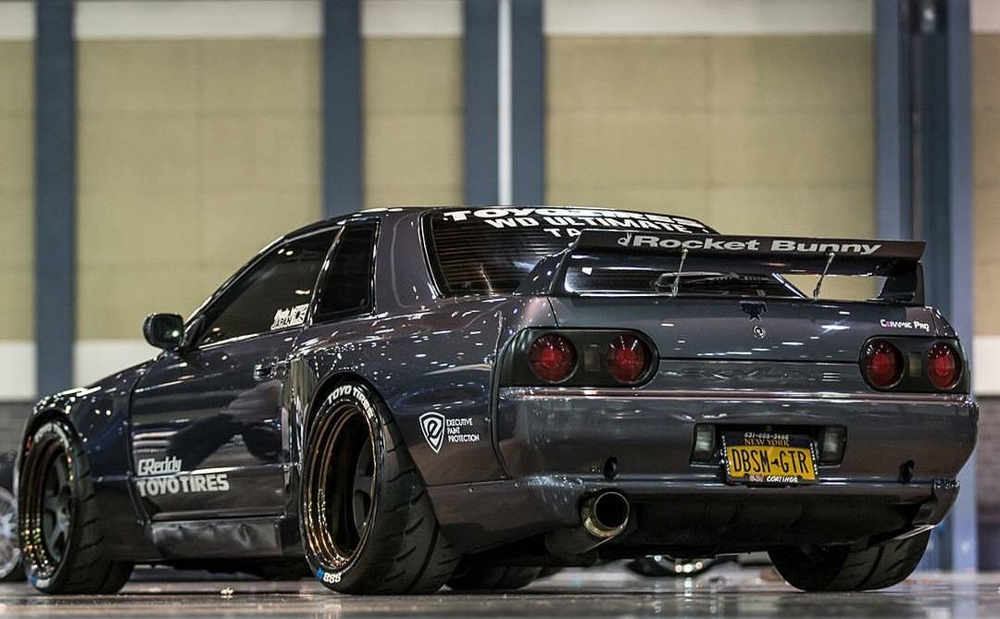
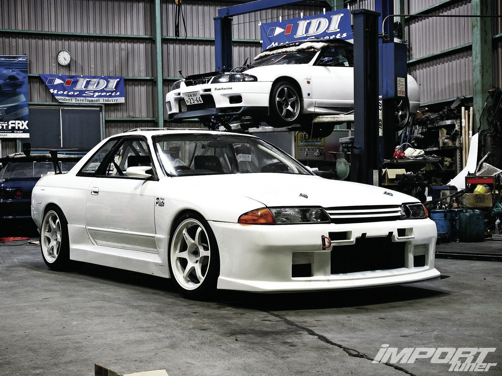
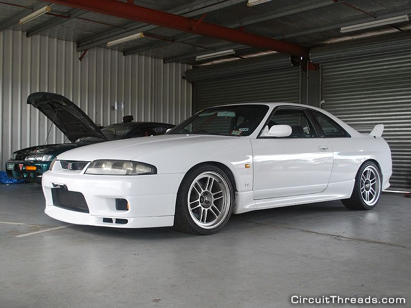
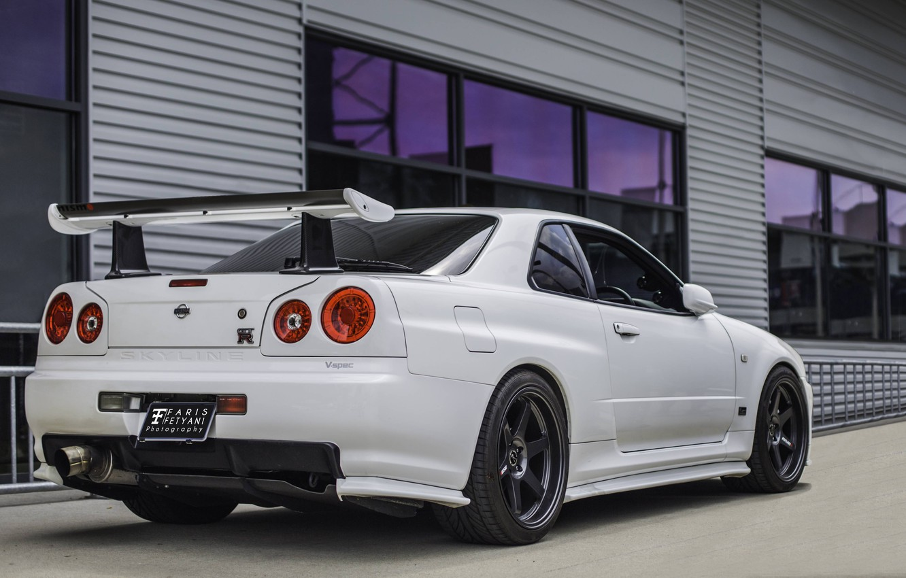
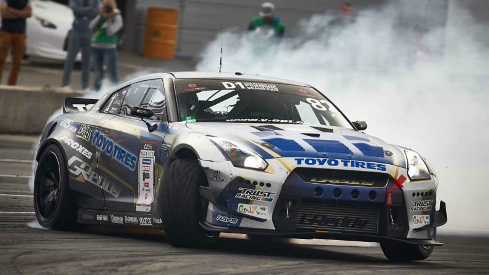
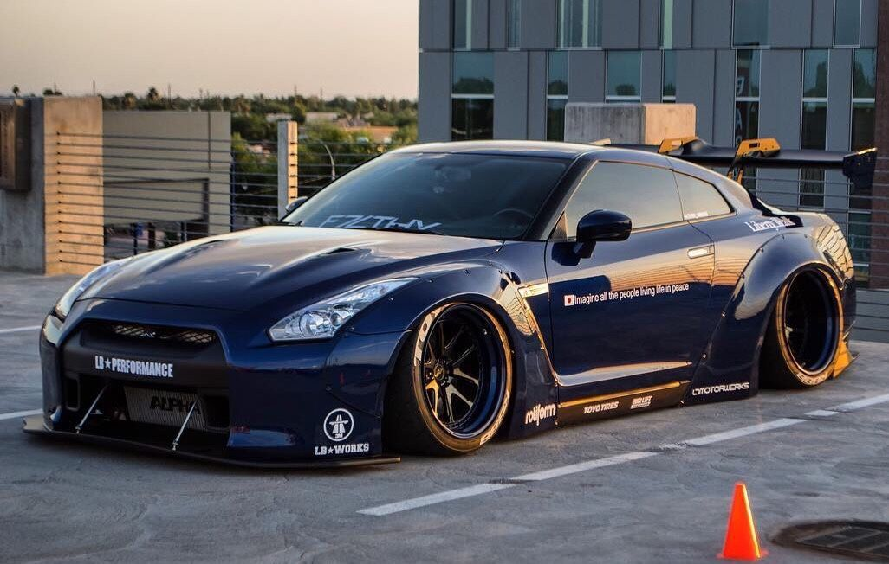

Nissan Silvia S13, S14, S15
Nissan Silvia — спортивное купе, выпускавшееся японским автопроизводителем Nissan с 1965 по 2002 годы. Купе строилось на платформе Nissan S.  Silvia S13, появившаяся в середине 1988 года, как модель1989 года, пользовалась огромной популярностью в Японии. С появлением он был признан автомобилем года в Японии. Название Silvia перестало использоваться на экспортных моделях, к примеру в Европе она была известна как Nissan 200SX, а в Северной Америке — Nissan 240SX. Название Nissan 200SX также использовалось для модели Nissan Sentra B14 в кузове купе. S13 выпускалось на первой платформе Nissan Cefiro, называемой A31.
Silvia S14 дебютировала в Японии в конце 1993 года. Кузов, по сравнению с предыдущим, стал ниже и шире. Новый округлый дизайн создавал иллюзию того, что автомобиль значительно увеличился в габаритах. Колесная база увеличилась, что привело к улучшению управляемости. В отличие от экспортных рынков, где продажи S14 были невелики, Silvia продолжала пользоваться большой популярностью в Японии. Тем не менее, ширина колеи превысила 1700 мм, что привело к увеличению транспортного налога. Вне Японии кузова фастбэк и кабриолет перестали производиться, осталось только купе. Обозначения комплектаций были похожими на S13, однако пакет Club Selection исчез. Это поколение получило новую версию SR20DET, с системой N-VCT и большим нагнетателем T28. В 1996 году произошло небольшое обновление модели: внешний вид стал более агрессивным. Рестайлинг затронул передние фары, задние фонари, капот, крылья, решетку радиатора и бамперы. В салоне тоже произошли незначительные изменения. В 2000 году данный автомобиль уступил место на конвейере следующему поколению — S15. 
Новое поколение S15 появилось в Японии в 1999 году, с 250-сильным (184 кВт) двигателем SR20DET, имевшим модернизированный шарикоподшипниковый турбонагнетатель, а также улучшенную систему управления двигателем. Второй двигатель, SR20DE (атмосферный) развивал мощность 165 л. с. Седьмое поколение внешне и внутри выглядело довольно агрессивно, обновление кузова проходило с оглядкой на современные тенденции автомобильного дизайна. Модельный ряд изначально был упрощен, доступны две комплектации, Spec-S и Spec-R. Это поколение продавалось только в Японии, Австралии и Новой Зеландии, но, благодаря «серому» импорту, было также доступно в большинстве других стран. В Австралии и Новой Зеландии автомобиль продавался как Nissan 240SX. В Австралию Silvia экспортировали только с турбированным двигателем SR20DET. 
Nissan Skyline GT-R R32, R33, R34
Nissan Skyline GT-R - семейство спортивных автомобилей созданных на основе серийных автомобилей Nissan Skyline. В мае 1989 года публике наконец-то был представлен возрожденный GT-R в новом кузове R32. Легенда гласит, что планы по возвращению в строй машин с этим индексом в компании были настолько засекреченными, что кроме главного конструктора о них знали единицы, да и сам шильдик GT-R на машину будто бы наклеили буквально за считанные минуты до премьеры. Как бы то ни было, легенда вернулась. Однако это был уже совсем иной автомобиль. Если прежде «Джитиэр» был хоть и спортивным, но все же концептуально близким к остальным версиям, то новинка отличалась от гражданских собратьев очень серьезно.
Она была оснащена электронной системой полного привода 4WD ATTESA ETS (англ. Advanced Total Traction Engineering System for All Electronic Torque Split). Ее особенностью было то, что при появлении пробуксовки задних колес, подключались передние колеса, которым передавалось около 50% крутящего момента, что позволяло компенсировать потери при пробуксовке. В основе же автомобиль оставался заднеприводным. Система HICAS, получившая приставку Super, была модернизирована и управлялась уже с помощью электроники. 6-цилиндровый мотор объемом 2,6 литра RB26DETT имел две турбины, что позволяло достигать мощности в 500 л.с. при официальных 276 (максимальная мощность по джентльменским соглашением японских автопроизводителей). Получив в кольцевом чемпионате JTCC 29 побед в 29 гонках, выиграв 4 чемпионата подряд с 1990 по 1993 годы и поставив новый рекорд времени прохождения Северной петли Нюрбургринга для серийных машин, автомобиль доказал свое превосходство. Сначала в соответствии с гомологационных требований на GT-R устанавливались 16-дюймовые колеса, что ограничивало размер и эффективность тормозных дисков. После изменений в гоночном регламенте, которые позволили использования 17-дюймовых колес, в феврале 1993 года была выпущена версия GT-R V-spec (от англ. Victory, победа) с 17 "колесами BBS и увеличенными тормозными механизмами Brembo. Автомобиль также получил активный задний дифференциал. Годом позже выпущена V-Spec II, отличавшаяся более широкими шинами.  Именно с этого поколения к Nissan Skyline GT-R, с подачи австралийских журналистов, приклеилось прозвище «Годзилла» — ведь этот «монстр из Японии», выйдя на гоночные трассы Австралии, сразил наповал прежде непобедимого героя — Ford Sierra Cosworth. В местных же японских туринговых чемпионатах «Джитиэр» R32 и вовсе буквально блистал. 29 побед в 29 стартах Японского Туринга, титул чемпиона пять лет подряд, первые места во всех гонках серии N1 Super Taikyu, на стартовой решетке которых присутствовал GT-R.
Изменения в конструкции Nissan Skyline R33 RB26DETT в сравнении с с R32 носили эволюционный характер и касались в основном ходовой части. Машина оснащалась двигателем модели RB26DETT с увеличенным крутящим моментом и такой же максимальной мощностью, полноприводная модификация V-spec была оборудована системой распределения крутящего момента между осями ATTESA E-TS pro, куда входил дифференциал повышенного трения LSD и антиблокировочная система. В моторном отсеке и багажнике было установлено распорки стоек подвески. Машина по-прежнему отличалась крупногабаритным передним бампером с широким проемом, конфигурацией передних крыльев в стиле «blister fender» и задним спойлером грозного вида с регулируемым углом атаки. В модельном ряду появилась модификация LM limited, кузов которой был окрашен в ярко-голубой цвет, и версия Autech с 4-дверным кузовом, выпущенная ограниченной серией к 40-летнему юбилею модели.
Легендарный автомобиль вновь появился в январе 1999 года с измененной ходовой частью и другими обновлениями. Новое поколение стало немного короче предыдущего, и передняя ось стала ближе к переду. Покрытие клапанов были окрашены в красный блестящий цвет, вместо черного который наносился на клапаны прошлых поколений. Были также усовершенствованные турбонагнетателя. Специально для этого автомобиля была спроектирована новая, более твердая 6-ступенчатая коробка передач GETRAG. На моделях V-spec появились датчики температуры интеркулера. На R34 GT-R устанавливался 5,8 "LCD дисплей, позволяющий просматривать такие параметры, как давление турбонаддувом, температуру масла и охлаждающей жидкости, а для V-spec, также график продольных и поперечных ускорений и время круга в кольцевых гонках. Также, как и поколение R33, новые модели R34 GT-R V-spec оснащались ATTESA E-TS Pro system, но на стандартные GT-R системы «Pro» не устанавливались. Версии V-spec получили более устойчивую подвеску и заниженную посадку. Модели V-spec также включали пластмассовый диффузор который располагался на капоте, (охлаждал нижнюю сторону двигателя), и карбоновый диффузор, разработанный чтобы направлять под автомобиль гладкие потоки воздуха. Другая версия R34 GT-R именовалась M-spec. Модель была похожа на V-spec, но имела более мягкую подвеску и кожаный салон. При производстве пятого поколения GT-R, Nissan стал разрабатывать версию под названием N1, которая также ранее выпускалась в моделях R32 и R33, и технически, была схожа с предшественниками. На N1 не было: кондиционера, заднего стеклоочистителя и стерео систем. Всего было выпущено только 45 автомобилей, 12 из которых использовались подразделением Nismo (Nissan Motorsport) для участия в гоночных чемпионатах Super Taikyu. Большинство автомобилей оставшиеся были проданы гоночным командам и тюнинговым компаниям. В августе 2000 Nissan показал новую модель под названием V-spec II. Автомобиль получил довольно чопорную подвеску (более чопорную, чем на оригинальном V-spec). На новой версии появился карбоновый капот, легче алюминиевого, ранее устанавливался на всех GT-R. Еще одно отличие V-spec II от оригинала - это более темный цвет центральной консоли. Также, сиденья были сшиты из черной ткани, а не серой, ранее использовалась на других версиях R34 GT-R. В Феврале 2002 Nissan выпустил последнюю модель серии R34 GT-R, названную Nür. Она продавалась в 2-х версиях: Skyline GT-R V-spec II Nür и Skyline GT-R M-spec Nür. Название Nür было дано в честь знаменитой гоночной трассы Нюрбургринг (Nürburgring) в Германии. Обе версии были оборудованы модернизированным двигателем RB26DETT на базе двигателя N1, который позволял автомобилю развивать скорость около 300 км / ч. 
Новый «Годзилла» шагал по миру неспешно: продажи в Японии стартовали в декабре 2007 года, а в Европу машины добрались лишь в марте 2009-го. Связано это было с тем, что Ниссану было необходимо сначала отстроить обслуживание технологически уникальной машины на местах, а также с небольшими объемами выпуска. Ведь всего четыре человека в мире имеют право собирать из более чем 370 деталей двигатели для нового GT-R и ставить на них свое имя. На каждый мотор уходит до шести часов. Не забывали японцы и о гонках, выведя спортивные автомобили на основе нового «Джитиэра» на старты серий Super GT и FIA GT, а также на суточный марафон 24 часа Нюрбургринга.  С новым поколением «Джитиэра» возобновилось соперничество японцев с Porsche, а также попытки поставить новые рекорды на Нюрбургринге. Уже первый из современных Ниссан GT-R показал на Северной петле результат 7:26. Вокруг этого времени не утихали пламенные баталии, его оспаривали, устраивали независимые испытания, пытались аннулировать, обвиняя создателей в использовании нештатной резины... А тем временем GT-R подвергался регулярным обновлениям, в ходе которых становился мощнее и быстрее, а время разгона до 100 км/ч сокращалось, начавшись с показателя в 3,2 секунды до «сотни» и дойдя в итоге до совершенно космических 2,8 секунды. Так продолжалось до 2012 года, когда японцы объявили о создании спецверсии Nissan GT-R Nismo и заодно переплюнули свой собственный рекорд, поставив новое время: 7 минут 18 секунд, а это, на минуточку, девятый результат Нюрбургринга среди всех серийных машин. Тем не менее, в умах фанатов Nissan GT-R это далеко не только скорость, это в обязательном порядке еще и тюнинг. И тут поклонников ждало разочарование: от еще большей компьютеризации машины владельцу-энтузиасту пользы было мало, ведь система была наглухо закрыта и зашифрована. По крайней мере, так казалось вначале. Ведь спустя буквально год умельцы из небезызвестного ателье COBB Tuning взломали блок управления двигателем и научились записывать в него собственные программы. За ними потянулись другие, и пошло-поехало. Новый мотор оказался еще более тюнингоустойчивым, чем прежний. Если раньше лишь у самых безумных мастеров мощность машин переваливала за 1000 л.с., то теперь встретить на дороге GT-R, у которого под капотом 800 «лошадей» — вполне нормальное явление, а настоящие монстры приближаются уже ко второй тысяче сил. Например, на заезде серии Unlim 500 в Подмосковье фигурировал 1700-сильный Nissan GT-R от бюро Switzer, успевший на отрезке в одну милю разогнаться до 402 км/ч. 